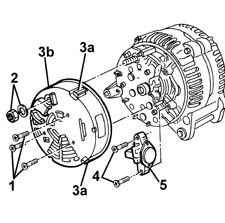
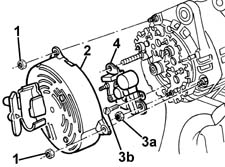

5530A24 alternator voltage regulator - r r with alternator removed
- Path
- Procedures > 55 ELECTRICAL EQUIPMENT > 5530 CURRENT GENERATOR > 5530A alternator and components > 5530A24 alternator voltage regulator - r r with alternator removed
- Kind
- repair procedure (removal / refitting; the operation number is the code)
- Applies to
- all engines; all production periods
- Interactive page
- https://sloeber94.github.io/elrnDB-fMltpl/en/#/2891908
Applies to: engines: 1.6 16v; all production periods
 Removing
Removing
 Refitting
Refitting1. Undo the bolts fixing the cover.
2. Undo the nut and recover the washer.
3. Remove the 3 retaining tabs (3a) and remove the cover (3b).
4. Undo the bolts fixing the voltage regulator.
5. Remove the voltage regulator.

Applies to: engines: 1.6 16v; all production periods
Refitting
RemovingCheck that the voltage regulator is not damaged.
Clean the dismantled components thoroughly.
Reposition the voltage regulator in its housing and tighten the fixing bolts.
Reposition the cover and fit the 3 retaining tabs.
Reposition the washer and tighten the nut.
Tighten the bolts fixing the cover.
Applies to: engines: 1.9 JTD 8V; all production periods
Removing
Refitting1. Undo the nuts fixing the cover.
2. Remove the cover.
3. Undo the nuts (3a) and the bolts (3b) fixing the voltage regulator.
4. Remove the voltage regulator and brushes.

Applies to: engines: 1.9 JTD 8V; all production periods
Refitting
RemovingCheck that the voltage regulator and brushes are not damaged.
Clean the dismantled components thoroughly.
Reposition the voltage regulator and brushes in the housing and tighten the fixing nuts and bolts.
Reposition the cover.
Tighten the nuts fixing the cover.